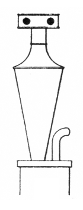

|
Chalumeau French Schalmei German |
Schalmey German Shawm English |
|
Chalemoy French? Chalemie French Chalmeaux French? Chalmouii French? Gingrina Latin Lituus Latin |
Piffaro Italian Piffero Italian Schallmey German? Scialumò Italian Shalomo German |
Most sources describe this stop as a soft-toned reed of the Regal class, found at 16', 8' or 4' pitch. It is suppposedly imitative of early double-reed instruments called chalumeau, piffero, schalmei, and shawm; similar or identical instruments included the bombarde and pommer. Wedgwood writes:
The first known example of the organ pipe of that name [Chalumeau] - the first reed stop of the organ - was at the Frauenkirche, Nürnberg (Conrad Rothenburger, circa 1463). Another early instance was at St. Martin, Danzig (1585).
This stop has been made with a variety of resonator shapes ranging from 1/16 to 1/4 length, including gently flaring, cylindrical, and the two forms illustrated here (the upper from Wedgwood, the lower from Audsley). The tone of this stop has also varied considerably, from that of a soft Trumpet to that of a Krummhorn. Locher and Wedgwood equate this stop with the Musette. According to Grove and Williams, the name Schalmei was used for an 8' flue in some �Hapsburg� organs of the late 1700's.

|
Chirimía Oboe Schalmei Rohrschalmei |
Schalmei Regal Schalmeibass Vox Humana Schalmei |
The most common name for this stop is Schalmei, with over 130 examples listed in Osiris. The same source contains just under 100 examples of Schalmey, and just over 50 of Chalumeau. Of Schawm we know of a dozen examples, all from the late 20th century. Only three examples are known of Schallmey. Two examples of Piffero are known, but they are both flues, not reeds. Regardless of the name, the most common pitch is 4', comprising nearly 2/3 of all examples. Approximately 1/3 are at 8' pitch; less than 3% are at 16' pitch, and only three are at 2'. No examples of Chalemie, Chalmeaux, Chalmouii, Gingrina, Scialumò, Shalomo are known.
Schalmei 4', Hoofdwerk; O-L-Vrouwkerk, Antwerpen, Belgium; Brebos 1565-67.
Schalmey 4', Oberwerk; Marienkirche, Stralsund, Germany; Stellwagen 1653-59.
Schalmey 4', Brustwerk; St. Cosmae, Stade, Germany; Schnitger 1668-75. Most of the pipes are apparently original.
Schallmey 4', Rück-positiv, Pedal; Katherinenkirche, Hamburg, Germany; Stellwagen 1543.
Chalemoy 8', Brustpositiv; St. Blasius, Mühlhausen, Germany; Wender 1709.
|
Original website compiled by Edward L. Stauff. For educational use only. Schalmei.html - Last updated 14 January 2004. |
Home Full Index |